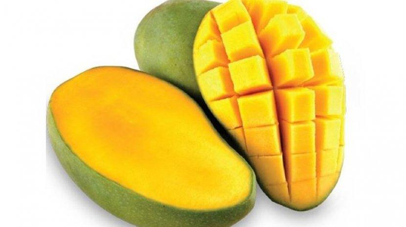

tentangbuah.com

Mangga
Mangga atau mempelam adalah nama sejenis buah, demikian pula nama pohonnya. Mangga termasuk ke dalam marga
Mangifera, yang terdiri dari 35-40 anggota dari suku Anacardiaceae.
Nama "mangga" berasal dari bahasa Tamil,mankay, yang berarti man "pohon mangga" + kay "buah".
Kata ini dibawa ke Eropa oleh orang-orang Portugis dan diserap menjadi manga (bahasa Portugis),
mango (bahasa Inggris) dan lainnya.
Mangga berasal dari daerah di sekitar perbatasan India dengan Burma, dan mangga telah menyebar
ke Asia Tenggara sekurang-kurangnya semenjak 1500 tahun yang silam.Buah ini dikenal pula
dalam berbagai bahasa daerah, seperti pelem atau poh.
Khasiat Mangga
- Mencegah jerawat
- Menyehatkan kulit
- Meredakan inflamasi pada kulit
- Mendorong terbentuknya kolagen
- AHA menghilangkan sel kulit mati
- Mencegah kanker
- Bantu menambah berat badan
- Mengatasi masalah pencernaan
- Menyembuhkan anemia
- Menunda penuaans
Daftar Umum Harga
| Jenis Mangga | Harga | |
|---|---|---|
| Jenis Per-Kilo | Jenis Per-Biji | |
| Mangga Arumanis | 20.000 | 2.000 |
| Mangga Manalagi | 30.000 | 3.000 |
| Mangga Garifta Merah | 42.000 | 4.500 |
| Mangga Chokanan | 50.000 | 5.000 |